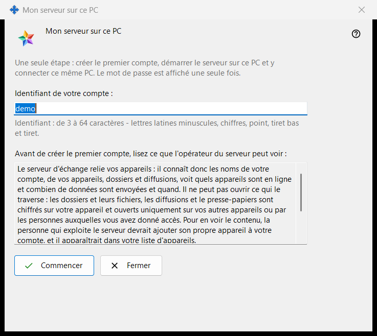
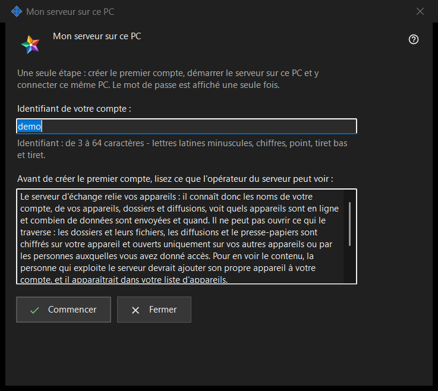

Mon serveur sur ce PC
Objectif
Configure en une seule passe un Media Exchange Server personnel sur ce PC : il crée le premier compte, démarre le serveur et y connecte ce même PC. L'assistant s'ouvre depuis le bouton «Utiliser ce PC comme mon serveur..» de la page Media Exchange Server des paramètres de Share Manager, qui n'est affiché que tant qu'aucun serveur n'est configuré sur ce PC.


Dans cet ordre
- Vérifiez l'identifiant proposé, tiré de votre nom d'utilisateur Windows, ou saisissez le vôtre.
- Lisez la déclaration de ce que l'opérateur peut voir.
- Cliquez sur «Commencer» et attendez les quatre étapes.
- Copiez aussitôt le mot de passe, puis l'empreinte ou la chaîne de connexion pour vos autres appareils.
- Cliquez sur «Fermer».
Les éléments
Identifiant
«Identifiant de votre compte :» accepte de 3 à 64 caractères : lettres latines minuscules, chiffres, point, tiret bas et tiret ; les majuscules sont converties en minuscules. L'indication sous le champ prend la couleur d'avertissement tant que le texte ne peut pas être un identifiant, et «Commencer» reste sans effet avant que le texte en soit un.
Ce que l'opérateur peut voir
La zone en lecture seule sous «Avant de créer le premier compte, lisez ce que l'opérateur du serveur peut voir :» énumère ce qu'un opérateur de serveur peut voir des comptes, des appareils, des dossiers, des diffusions et du presse-papiers, ce que le serveur ne peut pas lire et combien de jours les journaux sont conservés. Sur votre propre serveur, l'opérateur, c'est vous.
Étapes et échecs
«Commencer» exécute quatre étapes et nomme l'étape en cours : «Création du compte..», «Démarrage du serveur..», «Vérification du certificat..» et «Connexion de ce PC..». Pendant ce temps, l'identifiant est verrouillé et la fenêtre ne peut pas être fermée. Si aucun compte n'a été créé, une phrase en donne la raison, par exemple «Ce compte existe déjà - choisissez un autre identifiant.» ; corrigez l'identifiant et cliquez de nouveau sur «Commencer».
Résultat et adresses
En cas de réussite, la fenêtre affiche «Terminé : le serveur fonctionne, le compte est créé et ce PC y est connecté.» et liste «Adresse pour ce PC :», «Adresse pour les autres appareils :» (qui indique «non défini - saisissez-le dans les paramètres du serveur d'échange» tant que cette adresse n'est pas définie), «Identifiant :», «Mot de passe (affiché une seule fois) :» et «Empreinte du certificat :». Une fois l'adresse pour les autres appareils définie, «Chaîne de connexion :» s'ajoute. Si le serveur n'a pas démarré, le compte existe quand même et son mot de passe est affiché une seule fois en dessous.
Mot de passe et copie
Le mot de passe est masqué. «Afficher le mot de passe» le révèle ; «Copier le mot de passe» le place dans le presse-papiers par la voie protégée, qui l'écarte de l'historique du presse-papiers de Windows et du presse-papiers cloud. La fenêtre ne l'affiche que cette fois, sauf si «Conserver les mots de passe des comptes sur ce PC» est activé. «Copier l'empreinte» et «Copier la chaîne» sont de simples copies : aucune ne contient de mot de passe. Les autres appareils ont besoin de l'adresse, de l'identifiant, du mot de passe et de l'empreinte, qu'ils comparent à la première connexion.
Fermeture
Si le mot de passe n'a été ni copié, ni affiché, ni conservé sur ce PC, «Fermer» demande «Fermer sans avoir copié le mot de passe ?» avec Non comme réponse par défaut, car le mot de passe ne peut pas être affiché de nouveau, seulement réinitialisé.
Paramètres du gestionnaire · Paramètres de partage SFTP · Paramètres du serveur d’échange